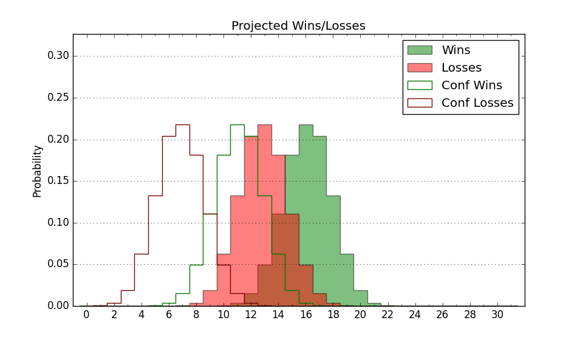

| Home | Game Probabilities | Conferences | Preseason Predictions | Odds Charts | NCAA Tournament |
| City: | Greeley, Colorado | |
| Conference: | Big Sky (2nd)
| |
| Record: | 4-1 (Conf) 9-7 (Overall) | |
| Ratings: | Comp.: -2.7 (193rd) Net: -2.4 (193rd) Off: 109.0 (95th) Def: 111.4 (302nd) SoR: 0.0 (168th) |
| Remaining | ||||||
|---|---|---|---|---|---|---|
| Date | Opponent | Win Prob | Pred. | |||
| 1/25 | @ Eastern Washington (124) | 20.4% | L 78-88 | |||
| 1/27 | @ Idaho (323) | 66.3% | W 79-75 | |||
| 2/1 | Idaho St. (285) | 80.5% | W 80-70 | |||
| 2/3 | Weber St. (116) | 45.5% | L 75-76 | |||
| 2/8 | Montana St. (238) | 72.2% | W 81-74 | |||
| 2/10 | Montana (113) | 44.3% | L 80-81 | |||
| 2/15 | @ Portland St. (271) | 49.9% | L 78-79 | |||
| 2/17 | @ Sacramento St. (308) | 61.2% | W 77-74 | |||
| 2/22 | Idaho (323) | 87.0% | W 84-70 | |||
| 2/24 | Eastern Washington (124) | 46.5% | L 83-84 | |||
| 2/29 | @ Weber St. (116) | 19.7% | L 71-81 | |||
| 3/2 | @ Idaho St. (285) | 54.8% | W 76-74 | |||
| 3/4 | @ Northern Arizona (321) | 65.7% | W 79-75 | |||
| Previous | Game Score | |||||
| Date | Opponent | Win Prob | Result | Off | Def | Net |
| 11/14 | Colorado St. (29) | 17.0% | L 64-83 | -18.6 | 6.7 | -11.8 |
| 11/18 | @New Mexico St. (261) | 47.6% | L 71-76 | -14.5 | 9.7 | -4.8 |
| 11/21 | (N) Chicago St. (294) | 71.5% | W 78-77 | -9.6 | -2.6 | -12.2 |
| 11/22 | (N) Radford (198) | 51.3% | L 68-79 | -15.5 | -1.5 | -17.1 |
| 11/29 | @San Diego (275) | 51.2% | L 72-74 | -11.5 | 8.6 | -2.9 |
| 12/2 | Cal St. Northridge (230) | 71.4% | W 75-71 | -20.9 | 17.6 | -3.3 |
| 12/11 | @Texas A&M Commerce (305) | 60.6% | L 99-101 | 11.8 | -12.1 | -0.3 |
| 12/15 | @Colorado (30) | 5.7% | L 68-90 | -8.8 | 10.0 | 1.2 |
| 12/21 | @Air Force (202) | 36.9% | W 83-79 | 20.1 | -9.8 | 10.3 |
| 12/30 | Northern Arizona (321) | 86.7% | W 92-77 | 24.4 | -14.4 | 10.0 |
| 1/3 | @North Dakota (276) | 51.5% | W 97-87 | 31.1 | -12.7 | 18.3 |
| 1/6 | Denver (170) | 60.5% | W 86-82 | -6.1 | 3.2 | -2.9 |
| 1/11 | @Montana (113) | 18.9% | W 98-92 | 16.0 | 11.0 | 27.0 |
| 1/13 | @Montana St. (238) | 43.3% | L 81-90 | 0.3 | -8.7 | -8.4 |
| 1/18 | Sacramento St. (308) | 84.3% | W 77-75 | 4.8 | -23.7 | -18.9 |
| 1/20 | Portland St. (271) | 77.3% | W 90-61 | 15.3 | 14.3 | 29.5 |
| Stats & Trends | |||||
|---|---|---|---|---|---|
| Current | Day | Week | Month | Season | |
| Composite | -2.7 | +0.1 | +0.3 | +2.4 | +2.7 |
| Comp Rank | 193 | -- | +7 | +33 | +23 |
| Net Efficiency | -2.4 | +0.1 | +0.1 | +2.5 | -- |
| Net Rank | 193 | +1 | +6 | +34 | -- |
| Off Efficiency | 109.0 | +0.0 | +1.1 | +7.3 | -- |
| Off Rank | 95 | -- | +11 | +112 | -- |
| Def Efficiency | 111.4 | +0.0 | -0.9 | -4.8 | -- |
| Def Rank | 302 | +1 | -4 | -57 | -- |
| SoS Rank | 298 | +1 | -66 | -165 | -- |
| Exp. Wins | 16.1 | +0.0 | +0.7 | +3.1 | +2.1 |
| Exp. Conf Wins | 11.1 | +0.0 | +0.7 | +2.1 | +1.9 |
| Conf Champ Prob | 7.7 | -0.8 | -1.4 | +2.3 | -1.7 |

| Advanced Stats | ||
|---|---|---|
| Stat | Value | Rank |
| Off Eff FG % | 0.546 | 54 |
| Off Ast Ratio | 0.157 | 85 |
| Off ORB% | 0.223 | 319 |
| Off TO Rate | 0.142 | 134 |
| Off FT Ratio | 0.268 | 322 |
| Def Eff FG % | 0.551 | 330 |
| Def Ast Ratio | 0.137 | 133 |
| Def ORB% | 0.242 | 56 |
| Def TO Rate | 0.142 | 217 |
| Def FT Ratio | 0.308 | 136 |